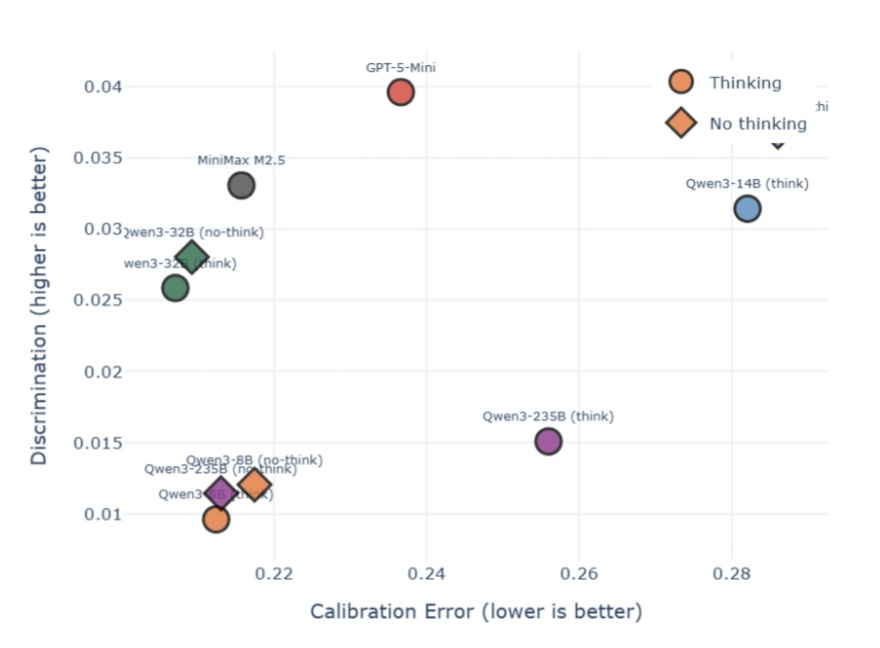

Giovanni Occhipinti
"Safe AGI, grant me the serenity to accept the things I cannot change, Courage to change the things I can, and Wisdom to know the difference."
— Anonymous
AI safety researcher in progress. Currently interested in AI control, with a focus on monitorability, hidden reasoning, and evals. ERA fellow, working on red-teaming monitoring protocols mentored by Monika Jotautaitė (Apollo Research). Founder of the Italian Initiative for Safe AI (I2SAI), bootstrapping the AI safety ecosystem in Italy.
Previously, Cosmos Institute grantee and visiting student at Oxford Uni (OXCAV) working on white-box control tools for CoT unfaithfulness mentored by Nandi Schoots. Also, I built evaluations to track self-forecasting capabilities in LLM agents, mentored by Lydia Nottingham at SPAR.
On the side, I facilitate cohorts of the Bluedot Technical AI Safety course and engage in career advising 1:1s to help newcomers get into the field.
In my free time, I like: alien, zombie, and b movies, literature, writing poetry, chess, board games, electronic music, and nature.
Always super happy to chat about AI safety, either to discuss research ideas and collaborations, or give career advice -- have a low bar to reach out!

Research
-

Know Thyself: Evaluating Self-prediction Capabilities in LM Agents [pre-preprint]
-

Probing and Steering Chain-of-Thought Unfaithfulness in Language Models
Selected Projects
-
Workshops at Seneca
"Prompting 101 for University Students", "Promise and Peril of AI Assistants".
-
Auditing LLMs for Intersectional Biases in HR
Systematic evaluation of bias in language models used for hiring. [report]
-
Evaluating LLMs for AI-generated Text Detection
Benchmarking detection capabilities across models. [report]
-
Hackathon at Yaya Labs
Headset for robots to convert environmental data into dreams. [link]
-
Hackathon at IFAB
AI agent for maintainers to analyze data from industrial machines with language. [link]
-
Poetry TikTok Page
Scaled a GPT-3 poetry page to +25k followers, +5M views, +700k likes. [link]
-
Art Installation: Controllo a Campione
Audiovisual installation on the relationship between humanity and technology. Visited by +500 people. [link]